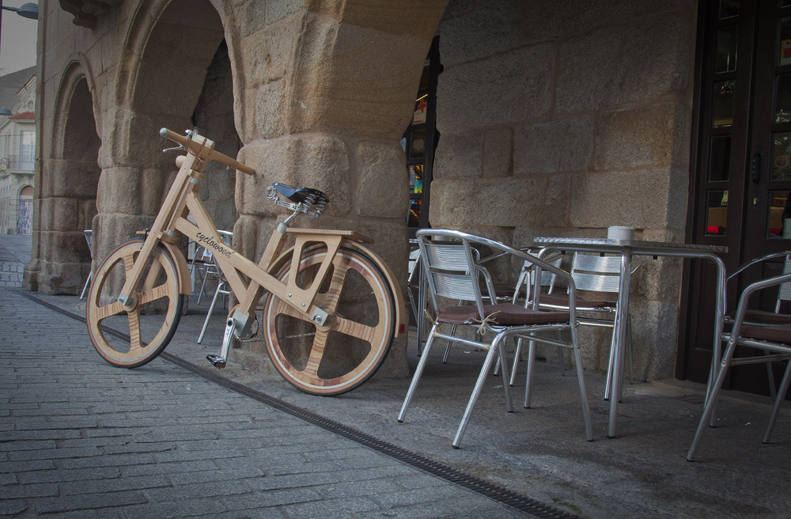

| Cyclowood está ubicado en Verin, Orense (España)
Aquí está nuestro centro de desarrollo y también es aquí donde son elaborados
los cuadros de madera Cyclowood. Tambien es donde se realiza el montaje de nuestras
bicicletas por personal técnico con alta cualificación usando los componentes mas
avanzados y que mejor se adaptan a nuestras bicicletas. Si no se puede visualizar el usuario
ha de saber su modelo.Cada unidad de Cyclowood lleva grabado un número de identificación (Código) que
facilitará la comunicación entre la empresa y los clientes al identificar univocamente a cada cuadro.
|
Carretera |
|
Nuestra empresa fue fundada en 1943 por D. Francisco Fernández Fernández en Vilela (Verín, Orense). A lo largo de sus sesenta y nueve años de existencia sufrio varias ampliaciones,
partiendo de un carácter artesanal evoluciona hasta su actual estructura, mostrándose siempre receptiva a las exigencias del entorno y caminando acorde con los tiempos.
Actualmente, posee unas instalaciones de 5.000 m2 dotados de la más alta tecnología para el tratamiento de la madera. Esta evolución nos ha llevado a afrontar nuevos retos, pero hoy día en Cyclowood
estamos ante el desafio mas importante jamás asumido, elaborar las bicicletas de madera más bellas, suaves en rodaje y avanzadas del mercado.
Nuestra satisfacción será total cuando los clientes sientan el orgullo de tener una Cyclowood.
|
| Cyclowood presenta su último lanzamiento una bici para los enamorados de disfrutar cada día de su ciudad la Nueva trekking class.
Estarás deseando que amanezca para poder subirte a tú nuevo y exclusivo modelo, sabiendo que la
gente ya no te verá; sino que te mirarán al paso y tú y solo tú podrás disfrutar de la nueva trekking class.
|
Unicamente podrán ser hechas de madera, ya que la fibra natural absorbe las vibraciones del impacto como ningún otro material al tiempo que mantiene su forma original inalterable.
Un árbol sano de madera noble puede ser flexado por el viento, pero siempre volverá a su estado natural. |